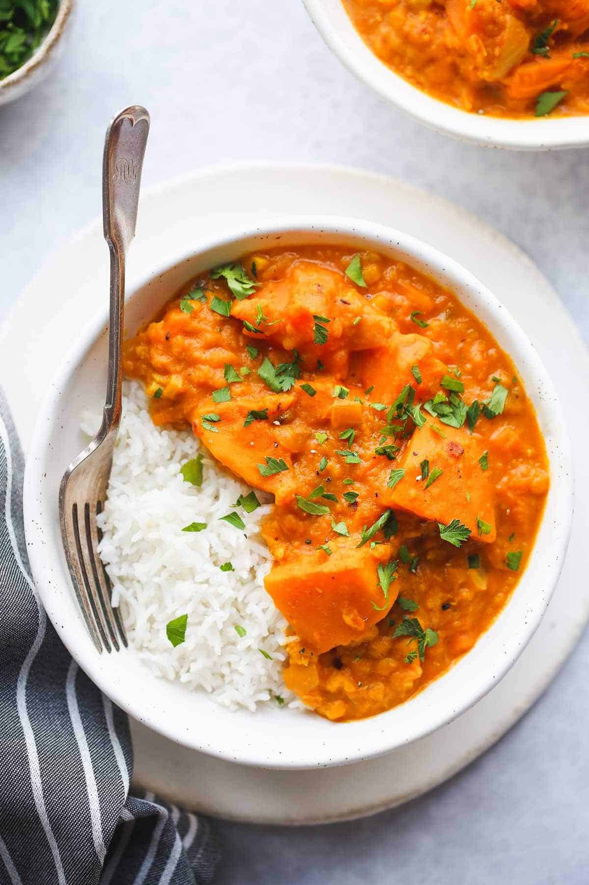

Pumpkin Curry

Delicious and Hearty Pumpkin Curry!
This cozy curry dish will be sure to complete a perfect, cold afternoon. Filled with many amazing spices and pumpkin, it is
hard to resist.
Ingredients
- 1/4 cup of pumpkin
- 1T of garlic
- 1/2 of a yellow onion
- 1/2 of a red bell pepper
- 1 can of coconut milk
- 1T of red curry paste
- 1.5T of soy sauce
- 1T of maple or sugar
Steps
- Saute the garlic and onion for 2-3 minutes until caramelized.
- Add in the bell pepper and cook until tender.
- Add in the red curry paste and cook for 2-3 more minutes.
- Add in the pumpkin, soy sauce, coconut milk and maple syrup or sugar. Let simmer for 10 minutes.
Serve over a bowl of rice and garnish with cilantro if you would like!